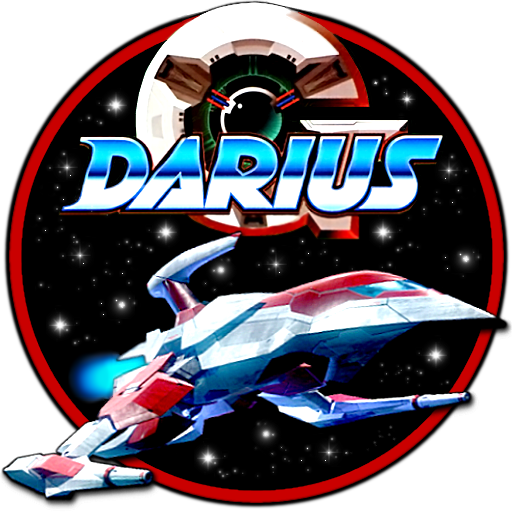

 Darius Plus
Details
 |
|
| Spielzeit | Nicht gespielt |
| Letzte Aktivität | Nie |
| Hinzugefügt | 30.09.2022 17:57:27 |
| Modifiziert | 12.12.2022 1:12:43 |
| Fertigstellungsstatus | Not Played |
| Bibliothek | Playnite |
| Quelle | |
| Plattform | NEC TurboGrafx 16 |
| Veröffentlichungsdatum | 16.04.1990 |
| Community Bewertungen | |
| Kritiker Punkte | |
| Benutzerwertung | |
| Genre | Arcade Shooter |
| Entwickler | Bits Laboratory |
| Verleger | NEC Avenue Taito |
| Eigenschaft | Single Player |
| Links | Wikia Wikipedia |
| Tag | [EMT] Logo Missing |
Beschreibung
NOTE: "Darius Plus" is the TurboGrafx-16 PC-Engine port of the original Darius produced by Bits Laboratory and NEC Avenue. This is a different port than the title "Darius+", which was published by The Edge and developed by Softek for the Amiga, Atart ST, and ZX Spectrum.
Amidst the clutter of arcade shooters in the late 1980s, companies needed to make their games stand out in some way. Simply flying a ship into outer space simply wasn't going to cut it anymore. Taito had an idea. Yes, there was still a spaceship. And yeah, that "outer space" part was still there too. But instead of the usual aliens, you fought fish.
Yes, fish.
Not even regular, aquatic fish, but robotic fish with lasers equipped to their fins, giant metal teeth and missiles firing from their gills. And not just fish either. There are squid, snails, and other undersea variations out for your blood as well.
The requisite plot is about the people of the planet Darius, who are being terrorized by said intergalatic fish. Only the heroic pilots Proco Jr and Tiat Young can save the day. The constant star of the Darius series is the Silver Hawk. Much like Gradius, it has a primary, forward firing weapon, along with bombs that can be used to attack vertically, and the usual shield.
The arcade game Darius games also used a unique system that attached three monitors together to create one massive horizontal playing field (also used in Taito's Ninja Warriors.) Naturally, this couldn't quite be replicated on the console system, so that nifty little gimmick is lost, but emulators can still replicate the dimensions of the screen, even if you end up looking at a tiny picture.
Looking to further set itself apart from the crowd, every Darius game has multiple levels, with several branching paths throughout the game. It adds tremendously to the replay value, especially since there are usual multiple endings, depending on which final zone you end up at.
Darius is a two-dimensional horizontally scrolling shoot 'em up set in a fictional future. Uniquely among shoot 'em ups, the game's screen was three times wider than conventional size, and the arcade cabinet used an arrangement of three screens to accommodate it. The player controls an ornate fighter spacecraft, named the Silver Hawk, and must navigate through scrolling terrain while battling a variety of fighter craft, ground vehicles, turrets, and other obstacles throughout the game's stages (referred to as zones in the game). The ship's arsenal consists of forward-firing missiles, aerial bombs and a protective force field, all of which can be upgraded by power-ups (in the form of large, colored orbs) that are dropped by specially-colored enemies throughout the game's zones. When the player reaches the end of a zone, a boss appears, which must be defeated to proceed. Once the boss of a zone is destroyed, the player is given a choice of which zone to play next via a branching path. While there are 28 zones in total, only seven can be played in a single run.
When various ports of it were made for different consoles, Taito (and others) were forced to shrink the playfield to fit on one screen.
The PC Engine saw three releases:
- Darius Alpha (1990): A very rare beta release. This is one of the rarest Hu-Cards ever published. You could only get a copy of this hardcore shoot-em-up by buying Darius Plus and Super Darius and then mailing coupons to the publisher. 800 copies were made available, and names were drawn from those who mailed their info in. Some copies of the game were also given away as prizes by PC Engine Gekken and Marakatsu magazines.
- Darius Plus (1990): The full game itself, again a PC Engine HuCard. The bosses that were removed in Alpha do not return here. Both Alpha and Plus were actually written for the PC Engine SuperGrafx and playing them on that console results in slightly improved graphics (less flicker and slowdown).
- Super Darius (1990): A conversion of Darius for the PC Engine's Super CD-ROM, very close to the original arcade version other than being single-screen. Features new bosses, as well as a "boss rush" mode.
Amidst the clutter of arcade shooters in the late 1980s, companies needed to make their games stand out in some way. Simply flying a ship into outer space simply wasn't going to cut it anymore. Taito had an idea. Yes, there was still a spaceship. And yeah, that "outer space" part was still there too. But instead of the usual aliens, you fought fish.
Yes, fish.
Not even regular, aquatic fish, but robotic fish with lasers equipped to their fins, giant metal teeth and missiles firing from their gills. And not just fish either. There are squid, snails, and other undersea variations out for your blood as well.
The requisite plot is about the people of the planet Darius, who are being terrorized by said intergalatic fish. Only the heroic pilots Proco Jr and Tiat Young can save the day. The constant star of the Darius series is the Silver Hawk. Much like Gradius, it has a primary, forward firing weapon, along with bombs that can be used to attack vertically, and the usual shield.
The arcade game Darius games also used a unique system that attached three monitors together to create one massive horizontal playing field (also used in Taito's Ninja Warriors.) Naturally, this couldn't quite be replicated on the console system, so that nifty little gimmick is lost, but emulators can still replicate the dimensions of the screen, even if you end up looking at a tiny picture.
Looking to further set itself apart from the crowd, every Darius game has multiple levels, with several branching paths throughout the game. It adds tremendously to the replay value, especially since there are usual multiple endings, depending on which final zone you end up at.
Darius is a two-dimensional horizontally scrolling shoot 'em up set in a fictional future. Uniquely among shoot 'em ups, the game's screen was three times wider than conventional size, and the arcade cabinet used an arrangement of three screens to accommodate it. The player controls an ornate fighter spacecraft, named the Silver Hawk, and must navigate through scrolling terrain while battling a variety of fighter craft, ground vehicles, turrets, and other obstacles throughout the game's stages (referred to as zones in the game). The ship's arsenal consists of forward-firing missiles, aerial bombs and a protective force field, all of which can be upgraded by power-ups (in the form of large, colored orbs) that are dropped by specially-colored enemies throughout the game's zones. When the player reaches the end of a zone, a boss appears, which must be defeated to proceed. Once the boss of a zone is destroyed, the player is given a choice of which zone to play next via a branching path. While there are 28 zones in total, only seven can be played in a single run.
When various ports of it were made for different consoles, Taito (and others) were forced to shrink the playfield to fit on one screen.
The PC Engine saw three releases:
- Darius Alpha (1990): A very rare beta release. This is one of the rarest Hu-Cards ever published. You could only get a copy of this hardcore shoot-em-up by buying Darius Plus and Super Darius and then mailing coupons to the publisher. 800 copies were made available, and names were drawn from those who mailed their info in. Some copies of the game were also given away as prizes by PC Engine Gekken and Marakatsu magazines.
- Darius Plus (1990): The full game itself, again a PC Engine HuCard. The bosses that were removed in Alpha do not return here. Both Alpha and Plus were actually written for the PC Engine SuperGrafx and playing them on that console results in slightly improved graphics (less flicker and slowdown).
- Super Darius (1990): A conversion of Darius for the PC Engine's Super CD-ROM, very close to the original arcade version other than being single-screen. Features new bosses, as well as a "boss rush" mode.